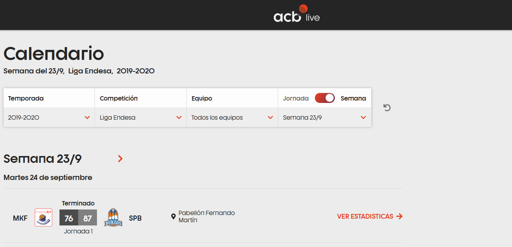

import pandas as pd
import json
import matplotlib.pyplot as plt
from funciones_auxiliares import *
import warnings
warnings.filterwarnings('ignore')
2.1 Diccionario de partidos#
El Diccionario de partidos es la estructura ideada para el almacenamiento de las urls referentes a los partidos que han sido disputados desde la temporada 2019-2020 hasta la temporada 2022-2023 para cada una de sus jornadas. A través de este notebook, se dará explicación de donde ha sido sacada la información y que estructura e información es almacenada dentro del diccionario mediante los siguientes puntos:
Descripción del portal web. Se hará una revisión de la información que es almacenada dentro del portal y de la que ha sido seleccionada para la construcción del diccionario y la forma de descarga de la información.
Revisión de estructura del diccionario. Será mostrada la estructura y tipo de información que es almacenada dentro del diccionario.
Análisis exploratorio. Será realizado un breve análisis exploratorio en el que serán revisados diferentes puntos de interés referentes al diccionario para la comprensión de los datos descargados.
A través de esos puntos se realizará la comprensión y entendimiento del trabajo realizado para la descarga de este diccionario.
1. Descripción del portal web#
Para la construcción del Diccionario de partidos ha sido utilizada la página web https://jv.acb.com/es, la cual es la página principal de la jornada virtual de la liga ACB en donde los partidos pueden ser consultados por los aficionados en tiempo real o en diferido, y en la que se almacena los distintos partidos que han sido dispustados a lo largo de diferentes temporadas. Esta página web, la cual ha sido utilizada para la descarga de información, tiene la siguiente entructura:

Como puede observarse, en la página web, se tiene una primera sección principal compuesta por desplegables y que permite al usuario interaccionar con estos. Estos deplegables entran dentro de la sección de Calendario son los siguientes:
Temporada. Se puede indicar la temporada a visitar en donde los valores pueden ser 2019-2020, 2020-2021, 2021-2022, 2022-2023 y 2023-2024.
Competición. Se puede indicar la competición a visitar en donde los valores puede ser Liga Endesa, Supercopa Endesa y Copa del Rey.
Equipo. Se puede indicar solo un equipo o como en la imagen todos los equipos que participaron en la competición en una temporada específica.
Jornada. Se puede indicar la semana o jornada específica a visitar dentro de una competición y temporada.
En la segunda sección de la páginada web encontramos el resultado y la información al partido o partidos que hayan sido seleccionados de la temporada, competición y jornada en los desplegables anteriores. Dentro de la sección de Semana se encuentra la siguiente información:
Fecha del partido. Hace referencia a la fecha en la que se disputó el partido.
Resultado. Hace referencia al resultado del encuentro entre ambos equipos.
Jornada. Hace referencia a la jornada en la que fue disputado el partido.
Ver estadísticas. Es el botón que permite acceder a los datos del partido.
Mediante técnicas de web scrapping que permite la interacción con el navegador y la descargar del código fuente de partidos, ha sido descarga la información referente a todos los partidos disputados entre las temporadas 2019-2020 hasta la temporada 2022-2023 mediante el script de código 01_Descarga_Diccionario_Partidos. En este mismo script también se incluye el guardado de la información en el Diccionario de partidos que será mostrado en los siguientes apartados.
2. Revisión de estructura del diccionario#
Como ha sido comentado en el apartado anterior, en el diccionario de partidos han sido almacenada las urls de todos los partidos disputados entre las temporadas 2019-2020 hasta la temporada 2022-2023. Durante este apartado, se busca comprender y entender la estructura que ha sido utilizada para el almacenamiento de los partidos. Para ello, se pasa a realiza la carga del diccionario dentro del entorno:
# Ruta al archivo donde se guarda el diccionario
ruta_dicc_partidos = 'E:/TFM/02. Datos/Trabajo/01. Diccionarios/01_Diccionario_partidos.json'
# Se realiza la carga del diccionario
with open(ruta_dicc_partidos, 'r') as archivo:
diccionario_partidos = json.load(archivo)
Tras la carga del diccionario, se pasa a visualizar la estructura del almacenamiento del diccionario. Para este ejemplo de visualización, en primer lugar serán visualizadas las temporadas de las que se tiene información, en segundo lugar la información almacenada en cada una de ellas poniendo de ejemplo la temporada 2022-2023 y, por último, se muestra el tipo de información almacenada en la primera jornada de esta temporada:
print("\n#####################################################################################")
print("# INFORMACION REFERENTE A LAS TEMPORADAS DESCARGADAS")
print("#####################################################################################")
l_temporadas = list(diccionario_partidos.keys())
for temporada in l_temporadas:
print("Temporada:",temporada)
print("\n#####################################################################################")
temporada = '2022-2023'
print("# INFORMACION REFERENTE A LAS JORNADAS DESCARGADAS EN LA TEMPORADA",temporada)
print("#####################################################################################")
l_jornadas = list(diccionario_partidos[temporada].keys())
for jornada in l_jornadas:
print("Jornada almacenada:",jornada)
print("\n#####################################################################################")
temporada = '2022-2023'
jornada = 'Jornada 1'
print("# INFORMACION REFERENTE A LA",jornada, "DE LA TEMPORADA", temporada)
print("#####################################################################################")
l_partidos = diccionario_partidos[temporada][jornada]
for partido in l_partidos:
print("Jornada almacenada:",partido)
#####################################################################################
# INFORMACION REFERENTE A LAS TEMPORADAS DESCARGADAS
#####################################################################################
Temporada: 2019-2020
Temporada: 2020-2021
Temporada: 2021-2022
Temporada: 2022-2023
#####################################################################################
# INFORMACION REFERENTE A LAS JORNADAS DESCARGADAS EN LA TEMPORADA 2022-2023
#####################################################################################
Jornada almacenada: Jornada 1
Jornada almacenada: Jornada 2
Jornada almacenada: Jornada 3
Jornada almacenada: Jornada 4
Jornada almacenada: Jornada 5
Jornada almacenada: Jornada 6
Jornada almacenada: Jornada 7
Jornada almacenada: Jornada 8
Jornada almacenada: Jornada 9
Jornada almacenada: Jornada 10
Jornada almacenada: Jornada 11
Jornada almacenada: Jornada 12
Jornada almacenada: Jornada 13
Jornada almacenada: Jornada 14
Jornada almacenada: Jornada 15
Jornada almacenada: Jornada 16
Jornada almacenada: Jornada 17
Jornada almacenada: Jornada 18
Jornada almacenada: Jornada 19
Jornada almacenada: Jornada 20
Jornada almacenada: Jornada 21
Jornada almacenada: Jornada 22
Jornada almacenada: Jornada 23
Jornada almacenada: Jornada 24
Jornada almacenada: Jornada 25
Jornada almacenada: Jornada 26
Jornada almacenada: Jornada 27
Jornada almacenada: Jornada 28
Jornada almacenada: Jornada 29
Jornada almacenada: Jornada 30
Jornada almacenada: Jornada 31
Jornada almacenada: Jornada 32
Jornada almacenada: Jornada 33
Jornada almacenada: Jornada 34
Jornada almacenada: 1/4 de final (1º)
Jornada almacenada: 1/4 de final (2º)
Jornada almacenada: Semifinales (1º)
Jornada almacenada: Semifinales (2º)
Jornada almacenada: Semifinales (3º)
Jornada almacenada: Semifinales (4º)
Jornada almacenada: Final (1º)
Jornada almacenada: Final (2º)
Jornada almacenada: Final (3º)
#####################################################################################
# INFORMACION REFERENTE A LA Jornada 1 DE LA TEMPORADA 2022-2023
#####################################################################################
Jornada almacenada: https://jv.acb.com/es/103350/resumen
Jornada almacenada: https://jv.acb.com/es/103352/resumen
Jornada almacenada: https://jv.acb.com/es/103351/resumen
Jornada almacenada: https://jv.acb.com/es/103354/resumen
Jornada almacenada: https://jv.acb.com/es/103353/resumen
Jornada almacenada: https://jv.acb.com/es/103356/resumen
Jornada almacenada: https://jv.acb.com/es/103355/resumen
Jornada almacenada: https://jv.acb.com/es/103366/resumen
Jornada almacenada: https://jv.acb.com/es/103358/resumen
Como puede observarse, como claves primarias del diccionario, se tiene la información referente de las temporadas que se almacenan en este diccionario de partiods. Como segunda clave, se tiene cada una de las jornadas disputadas en cada temporada. Para el caso de la temporada 2022-2023 se tiene la información bien diferenciada desde los partidos de la temporada regular (Jornada 1 hasta la Jornada 34) además de los partidos de playoffs que se disputaron en la temporada. Por último, como valor del diccionario, se almacena cada una de las urls de los partidos disputados en cada jornada y que tiene acceso al resumen estadístico del partido.
Una vez comentada la estructura del diccionario, se pasa a visualizar la estructura de jornadas y partidos de cada una de las temporadas descargadas:
print("#####################################################################################")
print("# INFORMACION REFERENTE AL DICCIONARIO")
print("#####################################################################################\n")
# Se obtiene las claves principales del diccionario y se realiza su visualización
l_temporadas = list(diccionario_partidos.keys())
for temporada in l_temporadas:
print("* En el diccionario se almacena información de la temporada:",temporada)
# Se obtiene las claves de la temporada
l_jornadas = diccionario_partidos[temporada].keys()
print("\t + En la temporada",temporada, "fueron jugadas",len(l_jornadas),"jornadas")
len_jornada_min = 99
len_jornada_max = 0
num_partidos_temporada = 0
for jornada in l_jornadas:
# Se obtienen las claves de la temporada
l_partidos = diccionario_partidos[temporada][jornada]
num_partidos_temporada = num_partidos_temporada + len(l_partidos)
if len_jornada_min > len(l_partidos):
len_jornada_min = len(l_partidos)
if len_jornada_max < len(l_partidos):
len_jornada_max = len(l_partidos)
print("\t\t - El número de partidos en la temporada es:",num_partidos_temporada)
print("\t\t - El número mínimo de partidos en la temporada es:",len_jornada_min)
print("\t\t - El número máximo de partidos en la temporada es:",len_jornada_max,"\n")
#####################################################################################
# INFORMACION REFERENTE AL DICCIONARIO
#####################################################################################
* En el diccionario se almacena información de la temporada: 2019-2020
+ En la temporada 2019-2020 fueron jugadas 30 jornadas
- El número de partidos en la temporada es: 238
- El número mínimo de partidos en la temporada es: 1
- El número máximo de partidos en la temporada es: 9
* En el diccionario se almacena información de la temporada: 2020-2021
+ En la temporada 2020-2021 fueron jugadas 46 jornadas
- El número de partidos en la temporada es: 359
- El número mínimo de partidos en la temporada es: 1
- El número máximo de partidos en la temporada es: 9
* En el diccionario se almacena información de la temporada: 2021-2022
+ En la temporada 2021-2022 fueron jugadas 45 jornadas
- El número de partidos en la temporada es: 327
- El número mínimo de partidos en la temporada es: 1
- El número máximo de partidos en la temporada es: 9
* En el diccionario se almacena información de la temporada: 2022-2023
+ En la temporada 2022-2023 fueron jugadas 43 jornadas
- El número de partidos en la temporada es: 325
- El número mínimo de partidos en la temporada es: 1
- El número máximo de partidos en la temporada es: 9
Como puede observarse, en la temporadas 2020-2021, 2021-2022 y 2022-2023 el número de jornadas disputadas es similar mientras que en la temporada 2019-2020 el número de jornada disputadas es de 30 debido a que la liga tuvo que posponerse por la pandemia del Covid-19. Por otro lado, en todas las temporada encontramos que el número máximo de partidos en una jornada es de 9 y el número mínimo de partidos es de 1 lo que da a entender que en todas la temporadas tenemos la información de la fase regular y del playoff.
3. Análisis exploratorio.#
Tras el análisis estructural del diccionario, se pasa a realizar un breve análisis exploratio para conocer la distribución de partidos y jornadas en cada una de las temporadas. Para ello, en primer lugar, se pasa a crear un dataframe que permita la construcción de las visualizaciones:
# Se recorre el diccionario mediante un bucle que permite construir un dataframe a partir de la información almacenada en cada uno de los diccionarios
data = []
l_temporadas = list(diccionario_partidos.keys())
for temporada in l_temporadas:
l_jornadas = diccionario_partidos[temporada].keys()
for jornada in l_jornadas:
l_partidos = diccionario_partidos[temporada][jornada]
for partido in l_partidos:
partido_info = {"TEMPORADA": temporada, "JORNADA": jornada, "PARTIDO": partido}
data.append(partido_info)
# Construcción de dataframe y visualización de la cabecera de este
df_trabajo = pd.DataFrame(data)
df_trabajo.head()
| TEMPORADA | JORNADA | PARTIDO | |
|---|---|---|---|
| 0 | 2019-2020 | Jornada 1 | https://jv.acb.com/es/18640/resumen |
| 1 | 2019-2020 | Jornada 1 | https://jv.acb.com/es/18642/resumen |
| 2 | 2019-2020 | Jornada 1 | https://jv.acb.com/es/18639/resumen |
| 3 | 2019-2020 | Jornada 1 | https://jv.acb.com/es/18638/resumen |
| 4 | 2019-2020 | Jornada 1 | https://jv.acb.com/es/18646/resumen |
Como primer análisis sobre la distribución del diccionario, se pasa a visusalizar el número de jornadas disputadas en cada temporada junto al número de partidos totales que han sido disputados en esta temporadas:
# Se realiza el conteo de jornadas y partidos que se disputaron en cada una de las temporadas
df_jornadas = df_trabajo[['TEMPORADA','JORNADA']].drop_duplicates().groupby('TEMPORADA').count().reset_index()
df_partidos = df_trabajo[['TEMPORADA','PARTIDO']].drop_duplicates().groupby('TEMPORADA').count().reset_index()
# Se realiza la visualización de la distribución de partidos y jornadas
colores = ['blue', 'green', 'red', 'orange']
fig, axs = plt.subplots(1, 2, figsize=(12, 6))
for i, temporada in enumerate(df_jornadas['TEMPORADA']):
jornada = df_jornadas.loc[df_jornadas['TEMPORADA'] == temporada, 'JORNADA'].iloc[0]
axs[0].bar(temporada, jornada, color=colores[i], edgecolor='black')
axs[0].text(temporada, jornada, str(jornada), color='black', ha='center', va='bottom')
axs[0].set_title('Jornadas disputadas por temporada')
axs[0].set_xlabel('Temporada')
axs[0].set_ylabel('Nº de jornadas disputadas')
axs[0].tick_params(axis='x', rotation=45)
axs[0].grid(False)
for i, temporada in enumerate(df_partidos['TEMPORADA']):
partido = df_partidos.loc[df_partidos['TEMPORADA'] == temporada, 'PARTIDO'].iloc[0]
axs[1].bar(temporada, partido, color=colores[i], edgecolor='black')
axs[1].text(temporada, partido, str(partido), color='black', ha='center', va='bottom')
axs[1].set_title('Nº de partidos disputados por temporada')
axs[1].set_xlabel('Temporada')
axs[1].set_ylabel('Partidos disputados')
axs[1].tick_params(axis='x', rotation=45)
axs[1].grid(False)
plt.tight_layout()
plt.show()
En las visualizaciones anteriores, se puede observar como claramente el volumen de partidos en la temporada 2019-2020 decrece considerablemente con respecto al resto de temporadas. Por otro lado, la temporada 2020-2021 tiene un mayor volumen de partidos debido a que el número de equipos que disputo la competición fue de 19 mientras que en históricamente en la liga el número de participantes es de 18. Dicho esto, se pasa a visualizar la distribución por jornada de los partidos disputados en cada una de ellas:
# Se realiza la obtención de las volumetrías por temporada y jornada de partidos
l_temporadas = list(df_trabajo.TEMPORADA.unique())
data_volumen = []
for temporada in l_temporadas:
df_temporada = df_trabajo[df_trabajo['TEMPORADA']== temporada].reset_index().drop('index',axis=1)
l_jornadas = list(df_temporada.JORNADA.unique())
for jornada in l_jornadas:
df_sel_jornada = df_temporada[df_temporada['JORNADA'] == jornada].drop_duplicates().reset_index().drop('index',axis=1)
volumen = len(df_sel_jornada)
volumen_info = {"TEMPORADA": temporada, "JORNADA": jornada, "VOLUMEN": volumen}
data_volumen.append(volumen_info)
df_jornadas_temporadas = pd.DataFrame(data_volumen)
i = 0
for temporada in l_temporadas:
generar_visualizacion_barras(df_jornadas_temporadas[df_jornadas_temporadas['TEMPORADA']==temporada],colores[i],temporada)
i = i + 1
Como se puede observar, durante las tres últimas temporadas descargadas la distribución de jornadas siguió una distribución normal debido a que no fueron afectados por la pandemia además de una distribución similiar en cuanto el volumen de partidos. Sin embargo, hay que destacar que durante la temporada 2021-2022 la jornada 33 únicamente se jugaron 8 partidos debido a la suspensión de 1 y el volumen de jornadas aumenta al haber un equipo más en la competición.